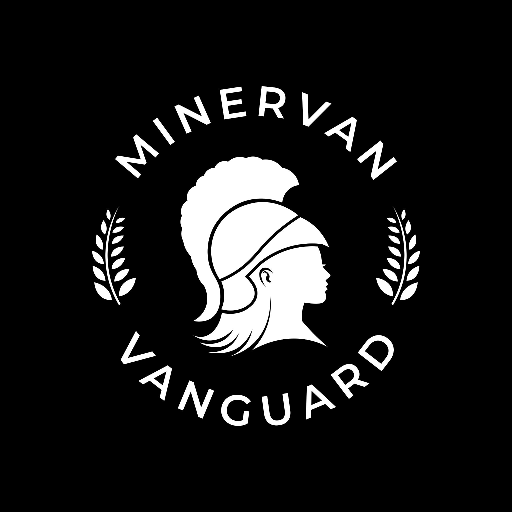
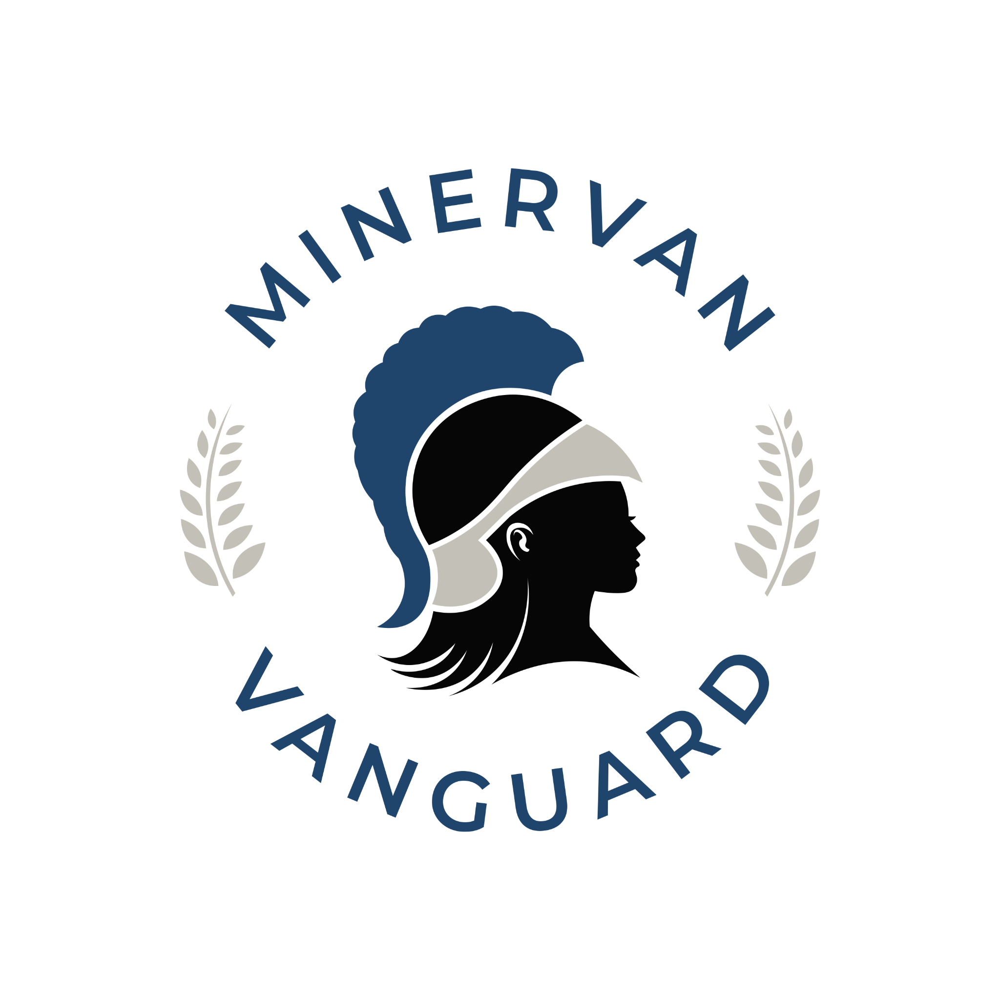

DEV / 01
MV
Currently cooking
Our Game
A game is slowly emerging from a dangerous mixture of ambition, caffeine and an ever-expanding list of “small” features.
View development updates →Broadcasting from somewhere in the void
We build games, organise Star Citizen operations, scheme in Torn, and keep one Discord alive through sheer force of habit.

Pick your poison
This is the shared home for everything under the Minervan Vanguard banner: the serious projects, the questionable plans and the people making both happen.
Currently cooking
A game is slowly emerging from a dangerous mixture of ambition, caffeine and an ever-expanding list of “small” features.
View development updates →Star Citizen
Co-op operations, exploration, logistics and the occasional extremely well-documented catastrophe.
Enter the Star Citizen hub →Torn
Our Torn presence for long-term progression, organised chaos and people who can remember what they were planning six months ago.
View our Torn presence →
Where everyone actually lives
Development notes, operation planning, screenshots, faction chatter, terrible ideas and the occasional useful announcement all end up here. You do not need to play everything to belong.
Add your real invite link in site-config.js to activate this button.
The vibe check
The people matter more than the rank, the loot or the collection of irresponsibly expensive digital spacecraft.
We like teamwork and reliability, but nobody is saluting before joining voice chat.
Games change, servers die and metas rot. The community should outlast all three.
Fresh from the comms
Devlogs, after-action reports, faction milestones, screenshots and whatever else deserves to escape the Discord scrollback.
Our central home is being rebuilt to unite game development and the wider guild community.
Read update →Add your role, activity focus, recruitment information and the best screenshots from the ’verse.
Enter the Star Citizen hub →Use this space for faction milestones, recruitment status, wars and community notices.
View Torn presence →Doors are open